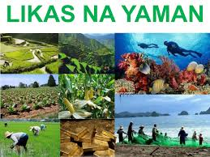
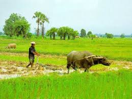

Mga Salik sa Pagsulong ng Ekonomiya

Likas na Yaman
Mga natural na yaman tulad ng lupa, tubig, mineral, at kagubatan na ginagamit sa produksyon.

Yamang Tao
Kakayahan, kaalaman, at kasanayan ng mga manggagawa sa bansa.
Kapital
Mga kagamitan, makina, gusali, at iba pang ginagamit sa produksyon.

Teknolohiya
Makabagong kaalaman at kagamitan na nagpapabilis sa produksyon.